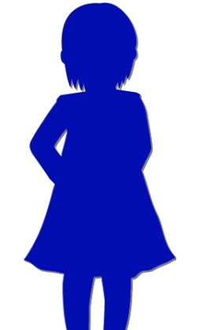

Seeing Off
Shiyo 790, May 1. We came to Megasawa once again.


"Oh my! Akane! Morning, morning!"
"M-morning. You're awfully energetic..."
"Ohhh-ho-ho-ho! There's nothing I'm afraid of anymore!"
"That way you talk sounds like an old lady, doesn't it?"
Mifuyu-san had rapidly gotten back to her old self since then, and seemed to have become more energetic than necessary.
"M-morning. You're awfully energetic..."
"Ohhh-ho-ho-ho! There's nothing I'm afraid of anymore!"
"That way you talk sounds like an old lady, doesn't it?"
Mifuyu-san had rapidly gotten back to her old self since then, and seemed to have become more energetic than necessary.
"Haruka-chaaan!"
"Natsumiii!"
And the two of them started wrestling again.
"Natsumiii!"
And the two of them started wrestling again.
"Hey, it's moving day today, so you two help out properly!"
"Gyahahaha!"
"That tickles, that tickles!"
They're not listening at all...
"Gyahahaha!"
"That tickles, that tickles!"
They're not listening at all...
Haruka-chan had cut her hair short after that, I was told.
Apparently, with long hair, her wound hurt whenever it caught on things.
More eye-catching than that was how much Mifuyu-san had changed.
True enough, it was a little old-lady-ish, or something...
Apparently, with long hair, her wound hurt whenever it caught on things.
More eye-catching than that was how much Mifuyu-san had changed.
True enough, it was a little old-lady-ish, or something...



"All right, that's all the luggage loaded.
Natsumi, you ride in Mifuyu-san's car."
"Yaaay!"
"Natsumi! Hurry and get in!"
"Yaaay!"
"Natsumi! Hurry and get in!"

"H-hey, Mifuyu, whatever you do, please drive safely, okay?"
"Ohhh-ho-ho-ho! It's fine! I won't lose to any car out there!"
"No, that's not what I meant...!"
Is this going to be okay...?
"Ohhh-ho-ho-ho! It's fine! I won't lose to any car out there!"
"No, that's not what I meant...!"
Is this going to be okay...?

"Phew, that's all the luggage carried in."
"Ahahaha! We're next door to Haruka-chan!"
"We can have sleepovers all the time!"
With that, the Niimuras' move was complete.
As of today, the Kogoris and the Niimuras were next door to each other.
"Ahahaha! We're next door to Haruka-chan!"
"We can have sleepovers all the time!"
With that, the Niimuras' move was complete.
As of today, the Kogoris and the Niimuras were next door to each other.
"Hey, hey, Mom! Can I go explore around here with Natsumi!?"
"Well! It looks like a lot's changed around here too, so go on, off you go!"
"Don't go too far, okay?"
By the time I said it, the two of them were already gone.
"Well! It looks like a lot's changed around here too, so go on, off you go!"
"Don't go too far, okay?"
By the time I said it, the two of them were already gone.
"Come on, Mifuyu, Ryoji-kun, let's take a break. I've made tea."
"Oh my, thank youuu!"
"Mifuyu, that way you talk really does sound like an old lady, doesn't it?"
"It's better than being all gloomy like before, isn't it! Ohhh-hohohohoho!"
Mifuyu-san went inside with a loud laugh.
"Oh my, thank youuu!"
"Mifuyu, that way you talk really does sound like an old lady, doesn't it?"
"It's better than being all gloomy like before, isn't it! Ohhh-hohohohoho!"
Mifuyu-san went inside with a loud laugh.
"Really, Mifuyu always goes to extremes..."
Natsumi and Haruka-chan grew up together and graduated from elementary school and middle school.
Beyond anything I had imagined, the Kogoris and the Niimuras built a good relationship.
Beyond anything I had imagined, the Kogoris and the Niimuras built a good relationship.
And then 10 years went by―
Shiyo 800, April 7
Shiyo 800, April 7

"Okay, Dad, Mom, I'm off!"
"Be careful!"
When Natsumi opened the door, a gust of wind blew in for a moment.
"Be careful!"
When Natsumi opened the door, a gust of wind blew in for a moment.

"Dad! It's about time you cut back on drinking!
Ojisan says so!"
"Ah, r-right..."
Dammit, that Eiichiro...
Eiichiro was still watching over us through Natsumi, same as ever.
Since that time, Natsumi's cherry-blossom phobia had gone completely quiet.
"Ah, r-right..."
Dammit, that Eiichiro...
Eiichiro was still watching over us through Natsumi, same as ever.
Since that time, Natsumi's cherry-blossom phobia had gone completely quiet.
Then the door opened.

"Ojisan, hey there!"
This time it was Haruka-chan who poked her head in.
"Yeah, be careful. Come to think of it, what are you doing once you get to the station over there? It's pretty far, isn't it?"
"Mom's coming to pick us up in the car. She went on ahead 'cause she's busy with the preparations, but she says she should be free by the time we get there. See ya!"
This time it was Haruka-chan who poked her head in.
"Yeah, be careful. Come to think of it, what are you doing once you get to the station over there? It's pretty far, isn't it?"
"Mom's coming to pick us up in the car. She went on ahead 'cause she's busy with the preparations, but she says she should be free by the time we get there. See ya!"
This time, it seemed, they'd really left.
The truth was, today Natsumi and Haruka-chan were heading off to a certain place for an overnight stay.
The truth was, today Natsumi and Haruka-chan were heading off to a certain place for an overnight stay.

"Ryoji-kun, I'm still against it. Going to that Arata settlement..."
"I know how you feel... But if Natsumi says so, there's nothing we can do."
"I know, but..."
Tomorrow, Eiichiro's thirteenth-year memorial service was to be held in the Arata settlement. [TN: Buddhist memorials count the year of death as the first year.]
Originally, the plan had been for me and Akane, who had been given special permission, to attend, but―
"I know how you feel... But if Natsumi says so, there's nothing we can do."
"I know, but..."
Tomorrow, Eiichiro's thirteenth-year memorial service was to be held in the Arata settlement. [TN: Buddhist memorials count the year of death as the first year.]
Originally, the plan had been for me and Akane, who had been given special permission, to attend, but―
"Besides, Mifuyu-san and Eiichiro are both with them.
Mifuyu-san's by their side, so there's nothing to worry about, is there?"
"You're right... Mifuyu, please..."
We have an unspoken rule: in this season, we always heed Natsumi's warnings.
So if Natsumi tells us 'Don't go to the thirteenth-year memorial service,' we have no choice but to obey.
"You're right... Mifuyu, please..."
We have an unspoken rule: in this season, we always heed Natsumi's warnings.
So if Natsumi tells us 'Don't go to the thirteenth-year memorial service,' we have no choice but to obey.
And if Natsumi says 'I have to be the one to go,' we have no choice but to let her.
Yes, the reason Natsumi ended up attending instead of us―
came down to Natsumi's danger sense.
What danger lurked in the Arata settlement, neither I nor Natsumi knew.
At Eiichiro's thirteenth-year memorial service, something was going to happen in the Arata settlement.
Yes, the reason Natsumi ended up attending instead of us―
came down to Natsumi's danger sense.
What danger lurked in the Arata settlement, neither I nor Natsumi knew.
At Eiichiro's thirteenth-year memorial service, something was going to happen in the Arata settlement.
I'd thought the business in Megasawa City was settled, but in fact one worry remained.
It was that the person who had sent Mifuyu-san the weapons and drugs really did exist.
Whether that person would go on being someone who did us no harm.
Natsumi might come face-to-face with that person.
It was that the person who had sent Mifuyu-san the weapons and drugs really did exist.
Whether that person would go on being someone who did us no harm.
Natsumi might come face-to-face with that person.
"Hey, Ryoji-kun..."
"Hm?"
"It's finally going to come out, isn't it? What that Arata settlement is about."
"Yeah. Finally... The 'someone I can trust,' the culture of using Noh masks, and... that drug."
"Hm?"
"It's finally going to come out, isn't it? What that Arata settlement is about."
"Yeah. Finally... The 'someone I can trust,' the culture of using Noh masks, and... that drug."
"Surely...
it won't turn out it would've been better to kill those children in Megasawa City... will it...?"
"No... surely not..."
"No... surely not..."
Read ✓